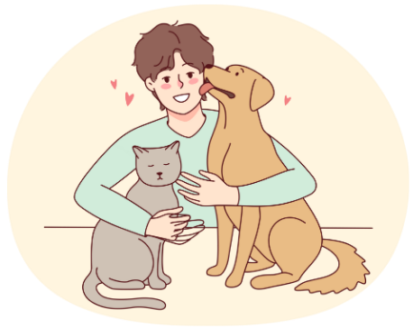

🐾 VOLUNTARIADO
Dedique seu tempo e amor para cuidar, resgatar e transformar a vida de animais em situação de abandono.
📢 DIVULGAÇÃO
Compartilhe campanhas, adoções e histórias para que mais pessoas conheçam e apoiem a causa animal.

Mas há várias maneiras de afastar esses problemas, é em condomínios que aceitam o animal mas que o responsável deve se prontificar as exigências, como andar de guia, recolher as necessidades do animal em espaço de lazer dos moradores e até em sua residência, a instalação de telas para que o evite as saídas dos animais até outra residência e sempre priorizando a segurança com as pessoas e animais a sua volta (FERNANDES, RENATA, 2025).
A tecnologia pode ser bem utilizada para esse meio de ajuda ao animal, para resolver um dos problemas que é também frequente que é o desaparecimento animal, um exemplo tecnologia para resolver esse problema é o SENSOR PET (BRUNO,et all 2022) que tem como objetivo um desenvolvimento de um sistema de Sensores Inteligentes, com um conjunto de Software de rastreamento de sinais GPS e RFID, que consegue rastrear os dados de onde o animal está ou se ele está em situação de adoção, que é um aplicativo de celular chamado “catch your pet”. Com ajuda da tecnologia eles conseguiram desenvolver um projeto de ajuda para localizar os animais perdidos e para adoção, que pode se estender para animais silvestres, para auxiliar na criação da agropecuária, mapeando animais ou até mesmo evitar possíveis roubos ou fugas.
Com essa utilização da tecnologia para ajudar os animais de diferentes formas, sendo animais domésticos,selvagens e silvestres, cada um sendo adaptado para cada ambiente, como por exemplo uma coleira para animais domésticos, e outro tipo de um dispositivo para outro ambiente que possa funcionar de forma eficiente para cada local, sem ter chance de perder, uma adaptação é um brinco de boi, com essa utilização é possível ter uma ideia sobre onde o animal está, tendo uma detecção de onde o animal está passando no momento, assim contribuindo para diminuição de animais desaparecidos. (BRUNO,et all 2022).

Dedique seu tempo e amor para cuidar, resgatar e transformar a vida de animais em situação de abandono.
Compartilhe campanhas, adoções e histórias para que mais pessoas conheçam e apoiem a causa animal.